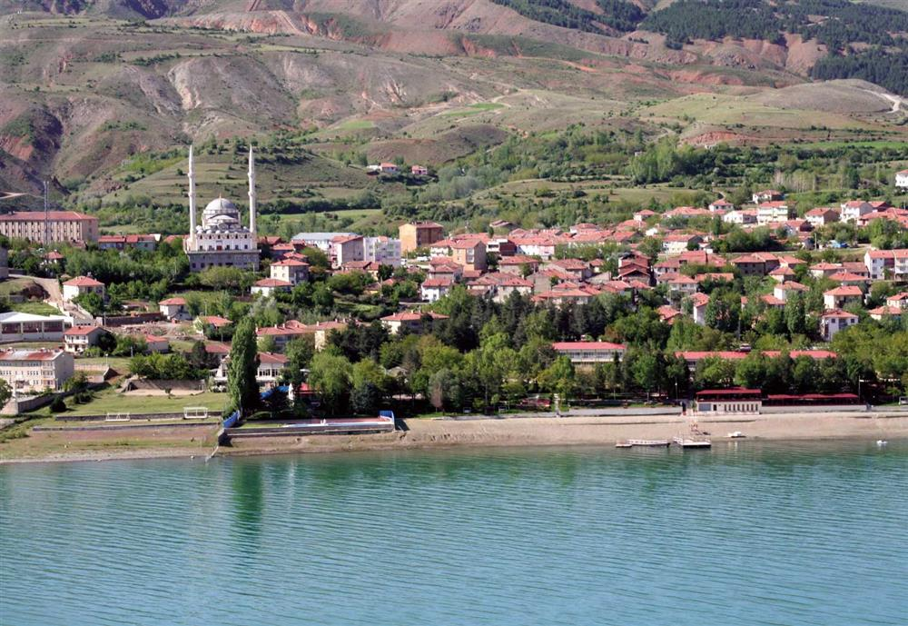
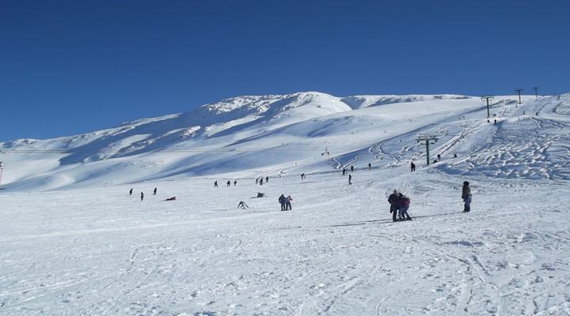
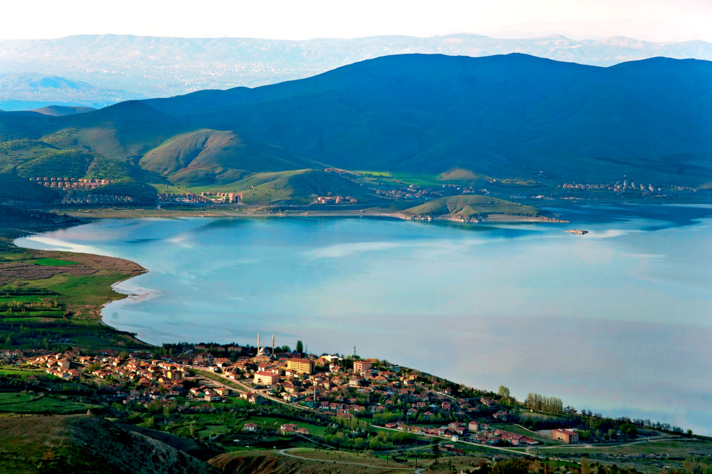

Elazığ’ın 31 km güneyinde yer alan ilçe merkezi, Elazığ'ın en yüksek dağı olan 2347 metre yükseklikteki Hazarbaba Dağı'nın etekleri ile Hazar Gölü kıyıları arasında yer almaktadır.İlçenin nüfusu 2019 yılı verilerine göre 8.910'dur.Yaz ve kış turizmi açısından, turistler ve Elazığ halkı için önemli bir cazibe merkezidir.Hazar Gölü’nün güney kıyısında yer alan Batık Kent ve Kilise Adası, arkeolojik ve doğal sit olarak tescilli bir alandır.Su yüzeyinde tarihi kalıntılar görülmektedir.Hazar Baba Kayak Merkezi ; aralık - mart döneminde kayak severlere, kayak sporuna elverişli pisti, telesiyeji ve kafeterya imkânları ile hizmet vermektedir.
Elazığ’ın 31 km güneyinde yer alan ilçe merkezi, Elazığ'ın en yüksek dağı olan 2347 metre yükseklikteki Hazarbaba Dağı'nın etekleri ile Hazar Gölü kıyıları arasında yer almaktadır.İlçenin nüfusu 2019 yılı verilerine göre 8.910'dur.Yaz ve kış turizmi açısından, turistler ve Elazığ halkı için önemli bir cazibe merkezidir.Hazar Gölü’nün güney kıyısında yer alan Batık Kent ve Kilise Adası, arkeolojik ve doğal sit olarak tescilli bir alandır.Su yüzeyinde tarihi kalıntılar görülmektedir.Hazar Baba Kayak Merkezi ; aralık - mart döneminde kayak severlere, kayak sporuna elverişli pisti, telesiyeji ve kafeterya imkânları ile hizmet vermektedir.


İlçede bulunan Hazar Gölü Türkiye’nin en güzel manzaralı göllerinden biridir. Tüm göl ve etrafı Doğal Sit alanıdır. Yaklaşık 10 bin kişinin iştirak ettiği festivallerde; ödüllü dağ bisikleti yarışması, amatör bisiklet yarışması , yamaç paraşütü, kano ve tekne gezintileri, dans gösterileri, su altı dalışları yapılmaktadır.
